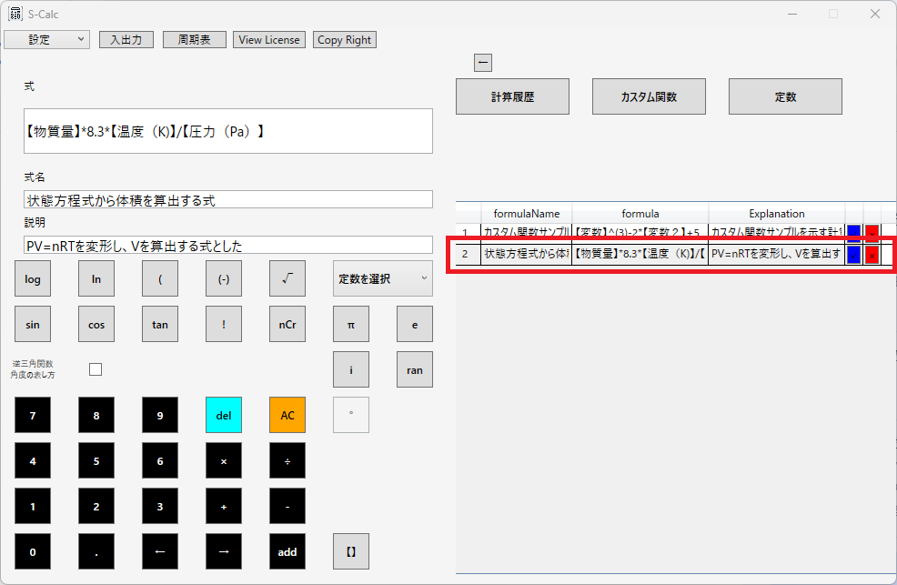

S-Calc カスタム関数の作り方
カスタム関数とは？ 使い方カスタム関数とは？
S-Calcでは、計算式をソフトに登録しておくことで計算式の使いまわしをすることが出来ます。 複雑な計算式やよく使う計算式を登録しておくと作業効率がアップ！---
使い方
- 画面右の「カスタム関数」ボタンを押下している状態で、登録したい関数を画面左に入力
- 複雑な計算式やよく使う計算式の入力が省略！

画面左の各コントロールに入力した情報が、画面右のグリッドに表示されていることを確認
式中の【】で囲まれている箇所が関数内の変数部となります。
※変数とは：数値や文字などのデータを一時的に保存し、あとで再利用できる記号のこと。計算式の中で値を入れ替えて使える便利な要素。